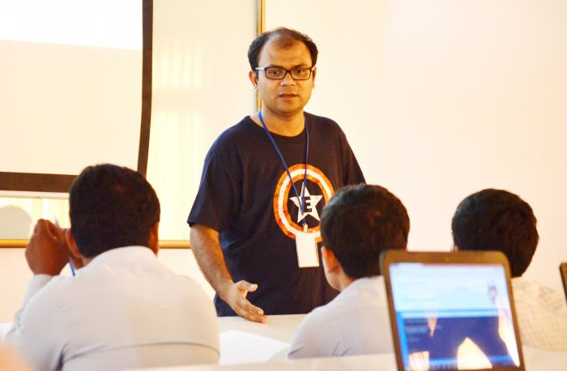

Schedule Saturday March 1

Day 2, Track 1-4
| Time | Main Hall | Mobile and Web | Web CMS and Frameworks | Wikipedia and Open Education |
|---|---|---|---|---|
| 09:00 | How to Become a [ Media ] Wiki Hacker, Harsh Kothari, 25 min | COMPED-First Step towards a Web Literate World, Gauthamraj Elango, 25 min. | Contributing to GNU Mailman with a little help from Django, Sneha Priscilla Makini, 25 min. | Adoption of OpenOffice in Cambodian Education System, Piseth Kheng, 55 min. |
| 09:30 | OpenStreetMap for Disaster Preparedness and Response, Kate Chapman, 25 min. | Open Source Apps on Blackberry devices, Justin Lee, 25 min. | Building Websites with Drupal, Tomo Huynh, 25 min. | |
| 10:00 | Google Code-in, Stephanie Taylor, 25 min | The Good, The Bad and The Ugly: Walking through a simple | Drupal in local languages to power SMEs, non-profits of | Deploying free educational projects, Pockey Lam, 55 min. |
| 10:30 | Google Summer of Code - Student Lightning Talks and Q&A; Cat Allman, Stephanie Taylor, GSoC students, Moderation: | Android Application Development, Mohit Kanwal, 1h Workshop | emerging countries & Building local language communities, Hari Prasad Nadig, 55 min. | |
| 11:00 | Hong Phuc Dang, Mario Behling, 1.5 h | Easy and Maintainable Web API for your next Mobile App, Arul | Hands-on: WordPress plugin development for brand awareness and | FOSS Localization and adoption of FOSS in the education system |
| 11:30 | Build your web app over the weekend, using Django and continuous deployment to Heroku, Hong Le Viet, 25 min. | Kumaran Ragunathan, 55 min. | profit, Michael Cannon, 1.5h Workshop | Sokhem, Khoem, 55 min. |
| 12:00 | Embracing the Static Web, Lakshan Perera, 25 min. | Open Source technologies that revitalize your phones, Sokha Rum, 1h | A Pragmatic Stack: K-12 education using FOSS, Lyle Kozloff, 25 min. | |
| 12:30 | Asian Mobile Culture and Who Will Control the Data of the Next Billion Internet Users, Arthit Suriyawongkul. 25 min. | Octopress, Sophearak Tha, 1h Workshop | Khmer Wikipedia and the free knowledge movement in Cambodia, Vantharith Oum, Workshop 1h (Khmer) | |
| 13:00 | SlateKit.org, open source tablet UX building kit, Ping-Hsun Chen, 25 min. | Webmaker - helping you create something amazing on the web, Ankit Gadgil, 1h Workshop | ||
| 13:30 | From Open Source to Open Government – g0v.tw, Chia-liang Kao, 55 min. | Documentation - not just prose!, Sundar Sindhu, 55 min. | ||
| 14:00 | Interaction Design with Google Web Designer, Fernando Travieso, 1h Workshop | Exploring TiddlySpace for use in workgroup environment, Handoko Suwono, 55 min. | ||
| 14:30 | Qt/C++ on Mobile/Android, Sebastian Sauer, 25 min. | Pronunciation Recording Tool for Wikimedia Foundation, Rahul James Maliakkal, 25 min. | ||
| 15:00 | Open source implementation of Chinese virtual singer, Ying-Chun Liu (Paul Liu), 25 min. | Qt5 and QtQuick2 introduction: A step by step Ubuntu Touch SDK, Ping-Hsun Chen, 1h Workshop | SEO Success Factors for Search Engine Friendly Websites, Sophy Prak, 55 min. | Mediawiki Extension: Annotator, Richa Jain, 25 min. |
| 15:30 | Making cool presentations with Inkscape and Sozi, Frederic Muller, 25 min. | MediaWiki Gadget Kitchen Workshop, Harsh Kothari, 1h Workshop | ||
| 16:00 | Piwik - Free Web Analytics Framework, Kien Truc Le, 25 min. | |||
| 16:30 | Open Source in Education, Preetam Rai, 20 min. | |||
| 16:50 | Wrap up and info of Sunday workshops, Hong Phuc Dang, Mario Behling; End of Sessions |

Day 2, Track 5-8
| Time | Development, Deployment, Security | Localization, Fonts, Graphics | Open Everything | Fedora |
|---|---|---|---|---|
| 09:00 | Improving IPv6 Attack Detector, Jianjun Chen, 25 min. | Hands-on: How to Create Vector Graphics Art and Icons with Inkscape, Sirko Kemter, 2h Workshop | Linux Cambodia, Jose de Soto, 55 min. | |
| 09:30 | Build your own local Mesh Network with standard Wi-Fi Routers, Bastian Bittorf,, 2h Workshop | |||
| 10:00 | OpenMRS, Harsha Siriwardena, 25 min. | |||
| 10:30 | Mapping areas with OpenStreetMap, Kate Chapman, 1h Workshop | Building a Fedora Clustering/Load Balancing System using Linux Virtual Server, Nguyen Nang Thang, Workshop (1 hour) | ||
| 11:00 | Openclipart for Developers, Jon | |||
| 11:30 | Reproducible and portable work environments with Vagrant and Chef, Michael Knoll, 55 min. | Phillips, 55 min. | How Free/Open Source Software could help your project/Startup, Wan Leung Wong, 25 min. | Document your code, Kushal Das, 25 min. |
| 12:00 | ExpEYES : An Open Source Portable Science Lab, Praveen Patil, 1h Workshop | Fedora Ambassadors Program: by Truong Anh Tuan, 25 min. | ||
| 12:30 | Open Source based (Enterprise) Architecture and Design, Vu Hung Nguyen, 55 min. | |||
| 13:00 | Khmer Keyboard for Smart Devices, Hong Danh, 55 min. | |||
| 13:30 | Secret Lives of Patches, Ray Chuan Tay, 25 min | QGIS: Spatial database, geoprocessing, visualization, Seila Nhiep, 25 min. | Logical Volume Managment(LVM) with Fedora, Uditha Bandara Wijerathna, 1h Workshop | |
| 14:00 | New Storage Features in QEMU/KVM, Fam Zheng, 55 min. | Journey of Bsdconv: Unicode, Charset, Encoding, Conversion, Detection, Variants, Kuan-Chung Chiu, 55 min. | Webconverger and Going into business fulltime with Open Source, Kai Hendry, 25 min. | |
| 14:30 | Why you should choose Ruby on Rails for your next web project, Channa Ly, 55 min. | GlitterGallery for Fedora design work, Sarup Banskota, 25 min. | ||
| 15:00 | Secure your communications: Tor, Email Encryption, GnuPGP; Roberto Soriano, 1.5h Workshop | Optimizations of the Terrain System in a 3D Scene, Xiangquan Xiao, 25 min. | Fedora Design Suite, Gnokii, 25 min. | |
| 15:30 | Open Comics as an educative and interactive tool, John Weeks, 25 mins. | Building a Fedora Clustering/High-Availability System using Pacemaker & Corosync: | ||
| 16:00 | by Nguyen Nang Thang, 1h Workshop | |||
| 16:30 | ||||
| 16:50 | Wrap up and info of Sunday | workshops, Hong Phuc | Dang, Mario Behling; | End of Sessions |